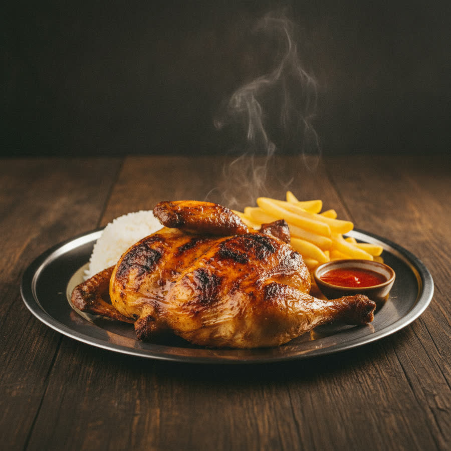
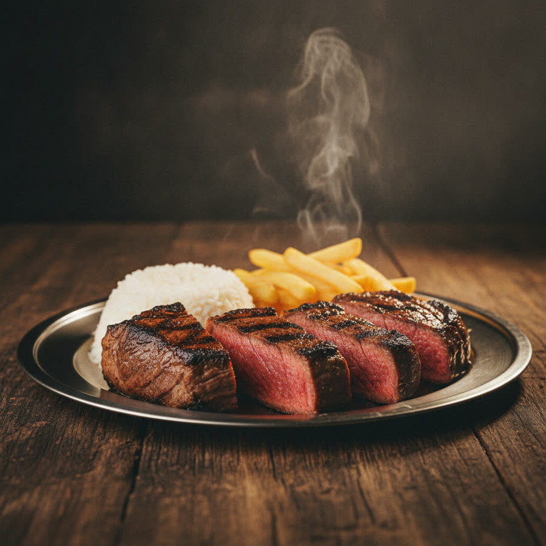
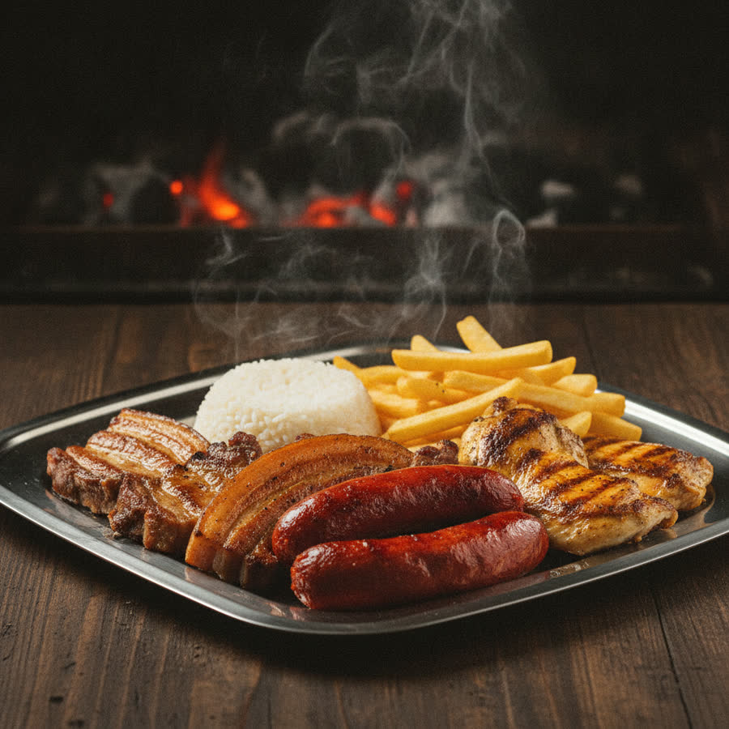

Frango Completo
Frango inteiro no carvão · arroz · batata · bebida
18,50 €
Assado na brasa de carvão, com o tempero da casa. Feito na hora, como manda a tradição.
Desde 2019 · Bobadela
Todos os dias acendemos o carvão às 11h. Não há forno elétrico, não há atalhos — há fumo, tempo e um tempero que é de família. É por isso que as pessoas voltam.
Direto da brasa
A nossa ementa


